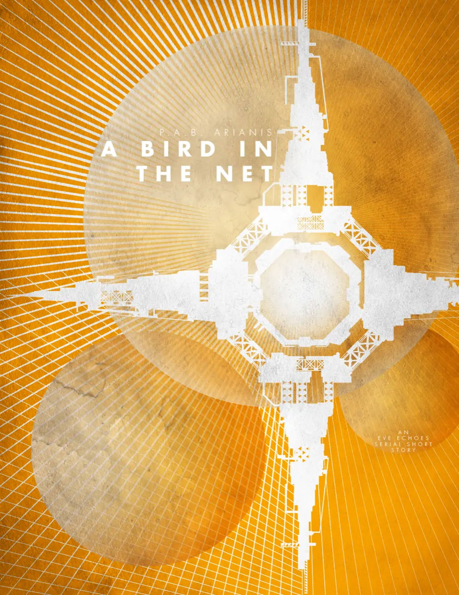

A Bird in the Net
BOOK 3 - What would you do to save your family? In a world where capsuleers reign violence at a whim, can one simple accountant risk everything for just a chance at hope?
Author: P.A.B.Arianis
Original post: https://eve-arianis.webnode.page/l/the-spectres-within/
Author’s Note: This is an EVE Echoes story written in serial short format. It is recommended that you pause between chapters... or don't, this is New Eden. Capsuleers make the rules anyway. This original work is based in the fictional world of New Eden as created by CCP and NetEase. All rights to concepts and property related to EVE Echoes or gameplay remain with their original owners.

1.
The life of a chief accountant never promised excitement or adventure, but for one accomplished enough to merit such a role in a megacorporation such as Nugoeihuvi, more commonly known as NOH, that life could be overflowing with perks.
Ge'Soren considered this truth as he waited patiently in the antechamber of his boss's office. It was a routine meeting, one he'd had over and over again, every morning, for the past eight years. His employer, for all his wealth and status, had a penchant for 'the more plasteel' as he called it. Not content to have meetings by holo, he preferred to haul his subordinates into his anachronistic office for such meetings. Soren didn't mind so much; even he felt a certain increased ability to feel out his boss's moods and responses. He could only imagine how much such an in-person style benefited his boss, a man renowned for his diplomatic abilities. Soren fully enjoyed the stability, wealth, and prestige which accompanied his current position as Chief Accounting Executive of the division. He wasn't about to complain about a few eccentricities that came with it. His communicator pinged once to indicate the beginning of the meeting time and Soren stepped in.
"Ahh, Soren, welcome! On time as usual, of course. What do we have for today?"
"Yes sir." He called up the prepared materials. A crystal clear holo projection, far higher fidelity than was strictly necessary for reviewing financials, enveloped the central space of the office. The brilliant technological display hovered in stark dissonance to the rich velvet and wood of the room's décor and neatly ended just before bisecting the few rare artifacts that were mounted like trophies along either wall. "As the top item for today sir, did you see the proposal we received yesterday from Konora Aurum Ltd.?"
His boss raised an eyebrow and smiled in a somewhat unpleasant way. "I did... to be very frank, I was surprised to see that it got past you in the first place. You're the last person I expected to take their bait."
"Their 'bait' sir?"
"Oh, come now Soren," the portly man's grin turned more jovial, as though sharing in a joke; this one at Soren's expense, clearly. "KA Ltd. is a front for an independent capsuleer group, surely you figured that out."
"Yes... I mean, no, I didn't fall for it sir." His boss's grin slipped towards a frown but Soren was already in it. "Isn't this exactly the sort of opportunity that we-" The frown had deepened into a scowl as his boss finally looked up from his data and at Soren directly, cutting him off abruptly.
"There is opportunity, and then there is outright suicide, Soren. For someone in as precarious a position as you, I never cease to be amazed at how slow you are to recognize existential danger."
The reference to his hidden romance sobered Soren instantly.
When it came to matters of family, the State was both matchmaker and priest. While it was not uncommon for partners to seek their own matches, it was unheard of for them to pursue any match which did not conform to the State's will. Society greatly discouraged his current choice in mate as he was Civre and his mate Dietis. The State full stop forbade that his chosen lover was also a man.
His employer had known of this for some time; that he chose not to report it had been just another carefully woven thread in the invisible net that so exquisitely held Soren under thumb and in his place.
"How do you think the State will feel about supporting this venture? Given the mercurial nature of capsuleers, such investments would almost certainly come to be used against them, no? Beside that, did you look at the margins on this shit? Those damn eggheads are being practically philanthropic! No allocation for overhead? All proceeds banked for future naval appropriation? Bah! It's like they don't even WANT to be wealthy. Now, what kind of piracy is that, eh?" He shook his head. "They're either blatantly hiding something or entirely imbecilic." His boss settled back, secure that his will had been sufficiently asserted. "No, just no. Give me a Gurista, or hell, I'll even take an Amarranian deal over this kind of trap any day, at least you know they are committed to wealth and power." He waved at the air, prompting the holo to cycle to the next set of figures. "What's next?"
Soren thought to push the matter; to point out the specific angles his boss had not mentioned, but he knew it would be futile at this point. Better to move on and contemplate lost opportunities later. If anything, it would be a fun thought experiment for him later to divine out of the proposal what he would have done. Once his boss had spoken though, that was that. KA Ltd. wasn't getting their capital investment today, not from NOH anyway.
"Next up, sir, is a payroll fund in Reisen. It appears that their figures are showing marked discrepancies..."
The meeting continued on like it did every day, with no more mention of capsuleers or Soren's personal life. Like every other day before in Soren's mobius strip of a life.
The private aircar zipped through the busy evening traffic which churned like organized chaos between towers of plasteel and glass. Cocooned from the cacophony outside, Soren sat peacefully enveloped within the luxury of yet another perk of his status and wealth. A nice tonic, with exactly the right amount of Raata Label gin to calm but not fog his mind, swirled about in his hands. As with any other commute home, he pondered the day. His thoughts shifted about like the other aircars around his.
It had been quite some time since his boss had surfaced such threats with him, but this had been the first time he'd openly referred to his relationship with Jorreth. That he had such information wasn't that surprising really, and no matter what his boss had on him, Soren wasn't so much as a tiny bit concerned about his position or even his life. His boss may have had enough over him to have him killed, or worse... But Soren still wasn't worried.
His assurance of safety didn't derive from knowing where almost all of this Boss's financial 'skeletons' were buried, which he did, but rather from knowing that he was so damn good at his job. He could turn a profit out of anything. Much of NOH's recent rise had been attributed to his boss's division. While his boss might be able to charm and disarm better than any five people he knew, Soren was the one who understood just how to make the numbers sing. What made him even better though, was that Soren could transform even the dirtiest gotten gains into ledgers pure as snow. With the right shell corporations here or the correct philanthropy there... when all else failed, giving a cut directly to the Navy to keep the Patriots happy never hurt either. The Navy never looked too closely at where their financial lifelines came from and NOH'd make bank from it the next time the Navy wanted to 'inspire' their pilots with some entertainment anyway. Whatever the business, Soren was born to move the money. It was a gift.
Maybe his work had not been as pristine as he thought of late? If his boss was floating reminders of his collateral quite so openly, it could be an indication that the balance was changing. Soren considered that he might have to put in a little more time this week checking his research and figures. Boring his life may be, but given what he knew of the more seedy organizations he'd had to deal with from time to time; it was at least much safer than most, for now anyway.
An urgent alert flashed in his communication device and he forwarded it to his lenses, the image of his partner suddenly synthesized on his ocular lenses as though Jurreth were floating Infront of him.
"It said 'urgent' what's wro-" Jurreth's face was ashen and horror-flooded. The feed didn't show anything in the background, but from his partner's posture, he could surmise that Jurreth was in the back of a public transit aircar. Jurreth hated public cars.
The evening plans had it that Soren was to pick Jurreth up before they both went to meet up with Emyllo and his tutor. Jurreth's son, born to a previous union, had all the makings of a holo prodigy. Between Jurreth's coaching and Soren's NOH connections, the child's future in the industry was near limitless. Rehearsals today would still be in session... They were a private affair, yet another perk of Soren's job, and the tutor was even supposed to be taking Emyllo to an early audition. An audition that Jurreth and Soren were about to be on their way to watch.
"There was an accident; equipment malfunction they said... nobody can find him. I'm on my way to the NOH Medical Center now. Why can't they find him Soren? Where would he go!?"
Soren couldn't make sense of it. "Jurreth, love, you've got to calm down, I can't... Who is missing? Why the Medical Center?"
"Emyllo..." sobs distorted the audio.
"Emyllo is missing!?"
"No, the tutor is, they can't find him in the wreckage."
"Wreckage?! Wait, what wreckage?! Jurreth, talk to me!" The hints of a sort of panic were beginning to creep in.
Jurreth took a massive steadying breath and finally continued. "Emyllo and Mr. Huppart left earlier than planned for the audition. There was a high-speed crash."
Soren fought desperately against the reality that was assembling itself in his mind but Jurreth continued on through the sobs regardless.
"Emyllo's been taken to the Medical facilities. It's bad Soren... they said if I was really quick... I might be in time to say goodbye."
Soren's world fell out from under him as his heart plummeted to the planet core.
2.
By the simple geometry of having been closer to the medical facilities than Jurreth, Soren arrived first. He was out of the aircar and through the VIP entrance before his mind caught up with him. As he stepped through the decontamination fields the tingling sensation brought his senses back to him, forcing him to slow both his pace and his emotions. Even now, under these conditions, he couldn't be seen to be so invested, even if his own son's life was hanging in the balance. This was because, of course, Emyllo could not be his son. Not to everyone else.
He was calm, he was the pond... "Please direct me to Emyllo Cartwith's room."
"That patient is not accepting visitors at this time, Mr. Alain." The automated system was polite and entirely devoid of any emotion or caring. He had to think fast.
"I have a special interest in the family," not untrue, "I am on an urgent duty to be of assistance to the father of patient Cartwith and must meet him outside the patients rooms." Also not untrue.
The system processed this request for a moment but found no further reasons for which to hold up such a senior level personage. The wall beside him displayed a room number at the same time as it was sent, along with an internal map and route, to Soren's personal data device. Soren wondered for only a moment, as he walked briskly through the corridors, how many additional rounds of questioning he would have been subjected to had his position been any lower than it was.
A short time later, he found himself standing just outside Emyllo's room. The entry was keyed only to open for medical personnel or one bearing Jurreth's unique biosignature. There was no use trying to bargain, fake, or even bribe someone into letting him have entry, at this point, only Jurreth, as Emyllo's guardian, could do that. Soren was a high ranking messenger of a megacorporation and nothing more in the eyes of that lock and thus he would have to remain; no matter how much he may yearn to be beside his would-be step-son. The small window inset beside the door gave him just enough of an angle to see the foot of the bed. The room was dim, nobody went in or out. That sat as odd to Soren. If Emyllo had been so fatally injured, would there not be more activity about him working to keep him alive until his father could arrive? Surly Emyllo was still alive, or this entire parting would be conducted in the cold halls of the morgue. Lifeless bodies did not occupy perfectly good medical rooms, at least not for those of Jurreth's status.
Soren had left a request with the main reception computer to alert him when one Jurreth Cartwith arrived at the primary entrance. The response to his request pinged now and time started to draw out as Soren could only imagine his lover's own ingress through the system. And so he waited, his mind adrift and frantic with thoughts as to what could be wrong with Emyllo. How could he join Jurreth in the room? Say he was acting as an agent in support of the family? A financial advisor wasn't the same as an attorney of law, but perhaps it could work. Jurreth would be too distraught to supply an excuse, it was up to Soren to throttle his emotions and put forth the charade. Family friend and advisor would have to do.
Jurreth rounded the corner of the corridor and started to increase his pace. Soren could see that the acceleration was targeted at finding support in him and quickly shook his head as slightly as he dared. Jurreth caught the remainder and his momentum came up short just a few paces away. Soren could see the wrenching pain is Jurreth's eyes but could do nothing but return it in his own. The arrival of the patient's family precipitated action that Soren's arrival couldn't have. A Medical Attendant stepped out from a nearby room and came swiftly to meet Jurreth.
"I am here as a family friend, acting in support of Mr. Cartwith." It sounded almost preposterous even as he said it, but Soren couldn't risk not establishing his context for being present. The attendant considered this for a moment, took in Soren's finely tailored suit and the business manner in which he was still presented having just come from the office, then accepted the fallacy. Whereas she was all set to speak directly to Jurreth, the attendant now addressed both of them, moving to stand beside the door.
"Emyllo has suffered severe cerebromedullospinal disconnection, Mr. Cartwith." She waited for a moment to let it sink in. She'd spoken the incomprehensible jargon like one might say the word 'death'.
"Can we see him? I want to talk to my son."
She was shaking her head. "I'm sorry, I don't think you understand. In a normal case of disconnection, the patient would still retain the use of their eyes and some linguistics. That isn't the case here. Emyllo can no longer focus his eyes or use any voluntary or involuntary motor function."
Now Soren understood the lack of effort in the room. Emyllo was lost. Swimming in a sea of amorphous visual shapes with only auditory sensations to cling to. His mind may be fine, but he had no way with which to communicate his thoughts. To the State, the child was already a casualty. Lost.
Jurreth wasn't ready to understand. "I don't care, he's my son!" Anger pushed through mounting sobs. "He'll know my voice. He's still there!"
The attendant took a deep breath and continued as though Jurreth's emotions were entirely expected and yet of no help. "Yes, Mr. Cartwith. He is, for now. Our nanites are allowing him the use of his eyes; performing base motor functions for him, but they are a temporary solution only. You should go and say your goodbyes now." She stepped back from the door, allowing them a moment to collect themselves and enter in their own time.
Stepping into the room was a surreal thing. It was as though entering a place that felt bereft of life and yet Soren knew that Emyllo was still there in every way that really mattered. They came slowly to the foot of the bed and Soren could see the child as he stared blankly up at the ceiling. They hadn't even elevated the bed for him. Something poisonous inside Soren wanted to lash out at them for what he saw, for what they were denying his would-be son. But he held it in. All of his rage and pain couldn't help Emyllo, not here and not now. Instead, he placed a steadying hand on Jurreth's shoulder and let him approach the boy first. The nurse, blessedly, had remained in the hall.
"Emy... Son, can you hear me?" After a movement, the eyes twitched.
A sort of heat, half of joy that there was some sign of life and half of rage over the State's dismissal of that life flickered into being inside Soren. Outwardly, he was calm and stoic, the epitome of everything the State cherished.
"We're... we're going to find a way for you Emy. You'll be on stage again in no time, you'll see." Even Soren could hear the hollowness of his partner's words; the desperation to find some way to make them not a lie. Soren's mind churned. This wasn't right, this couldn't be the only option. What other choice could there be? He didn't know.
Numbers. Number and statistics. Those he knew, they were safe, they were predictable. Except... sometimes they weren't. He knew better than most. Sometimes the numbers didn't do what you wanted them to. Sometimes, with just the right spark of human element, they could surprise you.
The right human spark...
Were they really all just cogs in the system? Is that what they had to be? Soren was no longer sure. How could the functioning machine of society just reject something so pure, someone with such raw potential as what he saw still in the child before him. He knew there must be answers. He also knew he would not find those answers here.
Jurreth was talking to Emyllo in quiet tones that Soren couldn't hear over the thoughts in his head. He fell deeper into the paralysis of his role as the 'family friend' not letting himself act or even believe as though the child was lost. He couldn't be. Such a brilliant star in the sky of humanity. Not like this. He should have spoken to Emyllo too to reassure the boy. But he couldn't bring himself to, no matter how he tried.
In time, Jurreth said his goodbyes, in as much as any father truly could in but a few precious moments. Then he rose and walked with Soren back out of Emyllo's field of view. They stepped through the door and Jurreth lost all sanity, collapsing in tears into Soren's arms. Soren could only stand there, willing himself to be the rock, to be the sound foundation in all that flew apart around him. He was calm, he was 'just the friend', he was the cool and collected mind of a State Financier who let the horrors of the world wash upon him without flinching.
Inside, he burned.
3.
Something in Soren... changed, ever so slightly.
It was a subtle change, but the nature of it profoundly altered the trajectory of everything he'd ever calculated or planned. Figures danced through his brain as the musings of the day mingled with the horrors of the past few hours. The beginnings of a sort of wild and unorthodox salvation blossomed in his mind. It was shot through with holes, risks, and more than one massive assumption; but compared to the finality of what waited for him just on the other side of this moment in time, compared to the acceptance that Emyllo was truly lost, it was solid gold and he could not say no to it.
"Do you trust me, Jurreth?" He spoke it as just a whisper, a question for only two people in the universe.
"Huh?" Jurreth roused just slightly from the damp cloth on Soren's shoulder.
"Do you trust me?"
"Of course but why..."
Soren had already called up a very special contact on his personal device. The datadrop was untraceable and would be destroyed within minutes. It was only the first step, but it was the biggest. He was using his Boss's connections and it was a huge risk, but he didn't care. He couldn't care. He had to do something and this was all he had left. Pieces of the puzzle started to come together in his mind.
A new message appeared, this one linking to a new dataspace before self deleting. He knew the routine well enough.
::Pick-up Room 3591 NOH Medical #2, require attached hardware as well. Maintain current state. Stasis approved.::
Soren knew how to move a body quietly, just put the money in the account; done, along with pick-up location and where to drop off... where...
::Drop Kornora Freedom Extension Storage station, provide final unit location::
It was the best option and he didn't have time to do any further research. Low-sec space would grant him the sort of anonymity he needed and with only two stations in the system to choose from, the Kaalakoiota Factory presented just too much of a chance he'd be tracked, or worse; noticed as a lead Financier of a rival Caldari corporation. Better that the most important treasure in his life be in the hands of the Minmatar who needed money far too much to ask stupid questions like 'what might be in this stasis crate you wish to so covertly store here'
The movers would reply in the same manner using untraceable data drops with the exact location when the transfer was complete. It was going to cost him, smuggling wasn't cheap, but he could worry about that later. They'd assume it was his boss's money and trust that he was good for the rest of the fee on delivery. If he was really good, he might even be able to slip the delivery fee in as overhead on one of his boss's many other less-than-clean deals. Soren handled the numbers so that his boss didn't have to, so he could even claim deniability. Never had Soren been so glad to have played the role of 'fall guy'.
Now for the other love in his life.
"Jurreth, I need you to charter a flight for just yourself to Erindur. You can't have an agency do it, just you."
"Erindur... a transport flight? But Sor..." There was confusion in his eyes and Soren wished to all the Spirits that he could explain everything to Jurreth. As a father, he deserved to know the incredible chance Soren was about to take with all their lives, especially Emy's. But this place was too public, and Soren couldn't risk even the slight chance that someone might hear and be tempted to sell that information. "But that's... nearly all our savings."
"I know, but you just have to trust me, go, now." Time was racing. From the moment he'd initiated the body move it was only a matter of time before his employer put all the pieces together, and he needed every second of a head start that he could get. He was flying on instinct, making calls faster than he'd ever done before. He bade a very short goodbye to his partner, much shorter than such risks as he was about to undertake should have merited. He then initiated the next call even as he started walking for the VIP entrance.
As expected, he was put through to his boss's secretary. "Yes, good evening, Ms. Palmers... A message will be fine... Yes, I know that he receives text messages as well, but I think he'd prefer a more personal touch on this... yes, he really does, doesn't he... Uh ha... yeah that is certainly true... I'm sorry Ms. Palmer but I am quite pressed for time; would you please tell him that I believe that I've located a hidden angle on the Konora Aurum propo... no, Aurum, not O-Rim, no, no mining crap again... Yes, Aurum... proposal... Tell Mr. Zacurai that I think I see a loophole that, whether intentional or not, may give us a way to secure massive amounts of profit without the client being any the wiser."
Now she was asking as to which the client was again. Bless her heart; maybe he should have just texted, but Soren reminded himself that he needed the time inherent in letting the message be passed verbally. "Ok... Yes, that one. Tell him that I will need to take a company shuttle and see to this personally, it is, well, delicate." A pause, "Yeah, he'll understand." Now he needed something to offer... ah! "Oh, and tell him that I'm so sure of this that I'll even use some of my personal leave up to do it. Yes, I know I have a lot... Yes, even more than you... yes, well... Ms. Palmers... Ms. Palmers, I really have very little time." He was almost at the VIP entrance. "Thank you Ms. Palmers, and a good evening to you as well. What? My family? Oh, yes, they'll be... fine. No, nothing serious. Yes, we should have tea sometime and... yes, I'd love to meet your friend, I'm sure she is very lovely. Ms. Palmers... Ms. Palmers I really must go. Yes. Good night to you as well." He finally hung up and summoned his aircar.
The pain of lying to someone so innocent as Ms. Palmers bit at him, but better for her to assume he was calling from a medical facility in relation to his ailing grandparent, his only living relative as it were, than the alternative. He was backing his boss into a very specific corner. By having Ms. Palmers give the communication, he was banking on two advantages. The first was that she had a wonderful effect such that nobody, absolutely nobody could find it in themselves to be angry in her presence. It was a rare gift that he'd seen Mr. Zacurai use to blunt even the most violent monsters ever to walk into his office. The second was that he knew his boss well enough by now that by the time Mr. Zacurai was done with his nightly 'festivities' and received the message, Soren should be well out of the system and not worth summoning back. In such a corner, he expected his boss would simply send along his well wishes and tell Soren that he'd 'better bring back one hell of a pile of isk' to make it all worth the trouble. Soren could live with that.
The company aircar pulled up and he stepped in. Even inside, he kept his cool outward calm and focus. He wasn't free, not yet. He'd set everything in motion, with luck and the Spirits he'd soon be free... free of everything that imprisoned him and that protected him. But in this moment before the chaos, before the execution, he worried most for Jurreth. There had been no hesitation, whether out of his own desperation or even the lack of anything or anyone else to cling to, Jurreth had put every ounce of his faith in Soren, in his partner. The weight of that bore down on G'Soren Alain now, cauterizing the gaping wound he still felt at seeing Emyllo so stricken. They'd do what must be done... for each other and for their son.
"Where to?"
He took a long steadying breath. This was it, there would be no turning back from this moment now. "Mr. Zacurai's private hanger, please."
The aircar shot off into the evening traffic, its occupant destined for an even greater tempest.
4.
The flashing tunnel of subspace warp slipped by on all sides of the richly appointed observation deck. Maximized for the viewing pleasure of its occupants, the entire forward section of the standard Caldari shuttle was built of a single massive viewing port. In what some might see as a paradoxical luxury for the Caldari, a people who touted practicality and function over aesthetics, most of the corporate elite who rode within simply shrugged it off as no more than their due. Synthetic velvet and plush couches sat about well stocked refreshment stations, all canted just so that no matter the size of the party or station of the traveler, everyone had the most amazing views of the beauty of space around them. It was a testament to the majesty and brilliance that went into even the smallest of the State's spaceborne vessels.
Soren sat alone in the whole of the deck and stared out into the very center of the tunnel that swept by. He sat amidst the luxuries and beside the catered dinner brought by an actual person instead of by drone. He sat amidst a sea of wonder and privilege... and saw none of it. Instead, his mind reached out through space to the precious cargo that was even now making its way to Konora. He prayed that Emy was safe, that he would remain safe. For everything to work, Soren would have to go straight to his rendezvous. There would be no time to stop at the Freedom Exchange station to collect his son. There would be absolutely no way to meet Jurreth in Erindur, a few systems away. Soren could only trust that his hastily made plans would keep them both safe.
Jurreth hadn't even left for Erindur, and wouldn't for a day or so yet. Public transports cared more about consistency and maximum efficiency rather than expediency. Such efficiency saved money and filled seats; two very important advantages. Such would be enough for Soren's needs though. Jurreth was destined for the Sisters of EVE station which orbited the first moon of the fourth planet. It was one of two such stations in the system and the safest place Soren could think of close enough to Konora and their son.
Beyond the viewport, the warp tunnel ended at yet another stargate. There was a moment of aligning the ship, and then they were through and jumping back into Warp. Soren's mind returned to its musings.
The Sisters were a sort of humanitarian organization which spanned the entirety of New Eden. Their mission was outwardly one of search and rescue melded with exploration. Where few dared to fly, they warped in. Of all the many factions among the stars, they were the most likely to commit resources to a cause as hopeless as Emyllo's was. Spirits willing, Soren would emerge unscathed from this reckless venture into Null Sec to meet his beloved, their son in tow, among the Sisters. But thoughts of such safety were for after the peril was through. Now... now he had to focus.
Another gate; this one less guarded than the last.
Null Sec. It was a term that meant little to most of the inhabitants of New Eden. Universal bureaucracy, something Soren had learned to navigate quite well, assigned a level of security to each and every inhabited or explored system. Being of the sort to use universal language like Mathematics, those early paper-pushers used a scale of 1 to -1, with -1 being the most unsecure space known. Short for 'Null Security Space', the term Null Sec labeled a very distinct demarcation on the star charts where someone might travel from a system of .1 security or higher, into anything lower. CONCORD had no influence to spare for such systems, leaving them to the truly desperate, pirates and thieves, or, as benefited Soren in this moment, those bent on constructing their own little empires; capsuleers.
Entire wars raged out in the fringes of known space. Titanic alliances of capsuleer built corporations by placing flags in space then threw ship after ship, crew after crew, into a never-ending grinder. Empires fought for and scraped from the claws of local pirate warlords became monuments to even more powerful capsuleer warlords. But capsuleers were a mercurial lot, their whims ebbed and flowed with their passions and in the end, many of those empires crumbled or were conquered only to be replaced by yet another alliance, sometimes composed of even the very same capsuleers who defended the previous one. If there was one truism in this universe, it was that each and every capsuleer was moved only by their passions, for good or for evil, and nothing on any world or between could stop them.
Such a man was who Soren now traveled to meet.
Another gate came and went without Soren's notice.
He called himself Methandrux. There wasn't much in any public record about him for Soren to research, and he had certainly tried. The capsuleer held no particular rank of consequence, even within his own corporation, and appeared only a few sporadic times within the registry of various bounties or encounters completed by capsuleers for any of the four major Empires. What he did have, though, were connections. Through his various affiliated organizations, Methandrux had garnered the trust of not only his own corporation but also that of several others in the alliance. Further, the capsuleer worked for and with some of the most efficient killers ever to be suspended in a capsule.
All of this made him just the sort of person Soren needed. It also made him an incredibly dangerous man.
Soren was beginning to realize just how desperate his plan truly must be. How often did one walk up to a being of such power and influence and say 'You should build your business differently, then let me run it for you.' But Methandrux was only the gatekeeper to the larger goal. The groups he represented spent most of their time and energy devastating pirate fleets and caches or preying upon other capsuleers who did the same. N-RAEL, the designation given to the Null Sec system one jump out from Konora, was one of the greatest hotbeds of such activity. On any given day, billions and billions of isk worth of stolen pirate loot or modules and armaments scavenged from the kills of other capsuleers, passed through this single system. It was also the gateway to almost all of eastern Null Sec. And at a specific set of coordinates within N-RAEL, Methandrux waited for him.
All of that loot had to make it back into the Empire markets though. Most of it would be bound for Jita itself, the beating heart of Caldari business, and indeed of all business in New Eden. There was certainly no shortage of buyers within eastern Null Sec, but there was yet no formal market there. The whole of Null Sec was still too volatile to establish any major exchanges. Rival alliances couldn't risk letting business in when those shipping lines could be used to smuggle cargo of enemy ships ready to be assembled and launched from within one's own system. This meant that all space lanes led to Jita. It was far easier for a capsuleer warlord to just kill anything and everything not allied to them which deigned to travel into their space, then haul all the prizes out to Jita and sell them off there.
The stargates were all starting to look about the same now, despite differences in structure, the process was becoming the same. End warp, jump, start warp. Soren drifted even deeper into his thoughts.
The hauling of all the loot was at the heart of the Konora Aurum Ltd. proposal. The capsuleers they represented were looking for someone else to ferry all of their prizes into the markets, presumably because they were far too busy claiming those prizes to be bothered with the minutiae of selling them off. But for the capsuleers they represented, Konora Aurum, like the mythical pirates of old, was intent to see that the loot and earnings from it were split evenly and fairly between every capsuleer that participated in their capture with only a partial share going towards any overhead. This left almost nothing left in the way of profit. That lack of profit was what Mr. Zacurai had so quickly sneered at. As business ventures went, no one besides the capsuleers was getting rich off of so even a split.
But Soren wasn't interested in getting rich anymore; this was about survival now. Survival for him and for his family. For those goals, the proposal presented just enough hope. It had taken him the entirety of the trip to finalize the details, but at last he had galvanized a counterproposal.
Instead of taking capital from NOH to invest in a hauling fleet and personnel, Soren would recommend something more of a coop structure. It was just about the most un-Caldari thing he could imagine, but it solved the capsuleer's problem quite nicely. They only needed capital because they intended to move all of their loot back to Jita regularly. But what if they didn't need to move the loot at all, at least not yet? There were plenty of buyers in their region, hell, even their corporation and alliance mates would be interested in what they plundered, the catch was that they just couldn't sell it all on an open market. Thus; a closed coop. All they would need to get started would be storage, and that was cheap. There were entire planets worth of space to store things out here. Then, as corp and alliance members paid into the system with credit, they could then turn around and use that credit to pay a few haulers and personnel to move the less desirable goods into the market. Thus, the system funded itself.
Another gate went by.
The hardest part of his counter-proposal was that he had to convince capsuleers that he was a useful part of it. He was banking on the idea that a group trying so hard to avoid something as mundane as hauling loot would also jump at the chance to pass off the management of everything too. He wouldn't ask much of them either, just a small cut of the credit portioned for overhead. Even that would be just enough for him and his family to disappear off Caldari radar. He would also request of them sanctuary for his family too, while he searched for a miracle for his son. It was asking a lot of such a mercurial group, but something in the fair and balanced nature of the initial proposal gave him hope. Given time and patience, even a cut of a portion of a split would grow. In that time, and with earned trust among these capsuleers, he could build enough income to maybe save his son.
It was his best chance. But, being the shrewd investor that he was, he'd also considered the back-up plan. If everything failed, then at least he could fall upon the Sister's mercy, surely they would take in so acclaimed a financier such as he was. They would also never even think of just giving up on Emy. Soren had created a failsafe information packet to be sent to meet Jurreth in Erindur should he die, but he hoped that wouldn't be needed. The Sisters would look after the loves of his life, but they couldn't possibly afford to pay him what he knew it was going to take to truly find answers for his son. So into the abyss of Null he had to go.
The small shuttle settled out of warp. Staring at the massive stargate that hung suspended just outside the forward viewport, Soren considered that it didn't look particularly different from any other stargates they'd just flown through. No massive banners displayed warning. No automated shipboard announcements were given. Only two massive turrets, one to either side of the gate, accompanied it.
And yet Soren knew what waited just on the other side of this gate.
N-RAEL. Null Sec.
He felt all of his body tense as the ship was aligned and shot like a shell through a cannon into subspace. This jump felt somehow longer it seemed.
The ship came to rest as it phased back into the current space. Soren rose from his place on one of the couches and stepped nervously up to the massive viewport. He looked out at the local nebulae formations and marveled at how they even looked different here, almost as though there was a blue-shift in the spectrum. He shook his head. Now was not the time to be getting caught up in superstition and ghost stories. It was just space, like any other space. He was just being paranoid.
He was about to turn around when he noticed a further curious thing. To the starboard side, the one furthest from the gate, he watched a soft of red globe expand and grow. It perplexed him, he had no idea what it might be. As he watched, it's color shifted through orange and then into a sort of pale blue before the limits of it became no more indistinguishable than that of the curious blue-shift of this region... wait...
Realization erupted into Soren's mind only two heartbeats before the first missile erupted into the side of his shuttle.
5.
The shuttle lurched and Soren felt a queasiness in his stomach as the pilot pulled hard over on the helm. Inertial compensators were particularly overpowered for most corporate shuttles, with the idea that the State's elite might want to go fast, but spirits forbid that they should feel any discomfort from it. For Soren to have actually felt such inertia meant that whoever was piloting this boat was treating it like a naval frigate. Given the sudden dual impact of yet another two missiles against the shuttle's fluorescing shields; right now Soren was not about to complain.
Every bit of furniture in the observation deck was riveted to the decking so Soren looked for the easiest and closest thing he could grasp, by pure amusing chance it was a self-serve bar rail. Through the viewport, he could see the gate come back into view. Even at a range of what must have been over eight kilometers, the structure of the titanic gate filled most of the view and continued to get larger. The Pilot was burning hard for all their lives.
Just as they'd closed half of the distance though, Soren felt a lurch as their momentum came almost to a halt. Something had snared them, stealing not only their acceleration but also any dream they'd had of escaping back through the gate to the relative safety of low security space. He considered what options they might have left. Presumably, their assailants were capsuleer pirates, would they be willing to let him go for ransom? How could he even offer? He didn't know.
Missiles continued to pound inward, stripping away the last wisps of shielding and landing with concussive force against the ablative armor. Soren watched the edges of the viewport as they shimmered and luminesced with the telltale signs of nanites attempting to repair the damage. He was struck by the mesmerizing beauty of it; the way they seemed to shift and ripple, like waves on a pond. Somewhere in the back of his mind, he knew that those nanites could do little more than redistribute what armor remained in vain attempts to patch the damage. With the shields down, it was only a matter of precious time.
He tore his attention from the marvels of engineering and swept his vision frantically for the nearest life pod. As with any boarding process, the attendants had covered their location, but in the fiery moment of truth, he couldn't for the life of him remember which way was which. Massive flashing indicators pulsed over several person-sized openings along what had previously been richly decorated walls and something in his brain willed Soren toward them. Through the opening, Soren could see that even these life pods had been spared no luxury. He wasn't sure why he'd noticed; funny what the mind caught on during moments like these. He was just about to reach the nearest of the pods when he realized that the missile fire had stopped... why? Was it ransom after all? And why wait so long to offer it?
He still had no answers.
Motionless in his tracks, he looked back out the viewport just in time to see one of their attackers move to come right between them and the gate. The familiar silhouette of a Caldari Condor II grinned wickedly at him as the gate's massive structure reflected N-RAEL's pink starlight back at him. The message seemed clear; 'only through me are you getting out.' As if to emphasize the point, a shimmering conical beam connected the shuttle to the frigate in what Soren now realized was the web emitter that had snared his shuttle so effectively.
Everything held in tableau for but a few seconds of eternity. Soren wondered as to what might be playing out, whether his life was being weighed, what it might be worth. Whatever the answer, he was powerless to impact the outcome. So there he waited, poised only a few steps from the life pod, but unable to know what would happen next and unsure whether to even get in it yet.
The Condor II shifted. It was a small shift, but just enough for Soren to realize that it hadn't been pointed at his shuttle... but rather away, towards the gate. Now it was accelerating away from them and gaining incredible momentum as it went. He tried to see the direction it was going and why, but he wasn't close enough to the viewport to really get a good view. Then he saw another interdiction field pop into existence as it grew from red to blue and filled the space somewhere in front of the Condor II's trajectory. Finally, he saw the ship.
It was too small, too far away to make out any detail. "Viewport, enhance sector 18"
"Negative; system currently restricted."
"Override, G'Soren Alain" It was worth a try.
Somewhere in the programming, there must have been a calculation and a conclusion as to what seniority Soren wielded. There was a faint chirp and grid 18 of the viewport promptly expanded. Nice to know he still held some weight, at least with the AI.
What he saw was at once mortifying and a miracle. Within the magnification, Soren could make out multiple frigates as they swarmed about the arrowhead form of a Hurricane battlecruiser. As he watched, still more ships were appearing out of warp to come to and move to join in on the slaughter. He tried to count them, but lost track at around fifteen. There were so many.
The Condor II that had been shooting at them must have moved out of range because he felt the shuttle's speed suddenly kick up. The starfield blurred as the pilot brought the ship back around and burned out and away from the gate once more. Soren had no idea why they'd abandoned the gate, but he decided to trust in the pilot's skill; he had no choice but to. The viewport magnification had held it's lock on the struggling Hurricane, presumably as one of the shuttle's near endless supply of camera drones had been tasked to by the AI.
To Soren, who was admittedly not well versed in such matters, the battlecruiser seemed to be doing better than he'd expected. While it had lost all of its momentum, it's cannons were blasting themselves with great precision against the larger cruisers that had come to claim it's death. First one, and then a second cruiser was forced to warp off grid. Then a third got to close. A tight beam struck out from the Hurricane and took hold of the unlucky Vexor cruiser. The Vexor realized its mistake and tried to come about and gain distance from the webbed battlecruiser but couldn't do so fast enough. Two more massive cannon volleys tore through the fleeing cruiser and reduced it to plasma.
But the Hurricane was paying for its own kill in time and shield. Already, Soren could see that the agile frigates, too quick for the battlecruiser's tracking computers, were chewing into their prey's armor. The Hurricane shimmered like a spear tip pulled from a forge. Hammer after hammer of missiles and cannon fire ripped into it; relentless and lethal. He knew he was witnessing the slow death of countless strangers who'd unwittingly spared his life. The awareness of that wouldn't allow him to take his eyes away. He felt that all he could do was bear witness. And so he watched, even as he knew his own life still hung in peril.
The explosion that inevitably ripped forth from the hull, split the battlecruiser down its axis. Top and bottom peeled away from each other like a flower blooming into space. The fireball which followed nearly blinded him before he tore his eyes away from the magnified image. It's target no more, the camera drone must have been re-tasked because the magnified section of the viewport suddenly disappeared, leaving in its place the glowing pink orb of N-RAEL's primary.
They were burning hard for the sun; why?
It took Soren a few moments to find it but when he did, he understood. By the rhythm of the subtle shimming, he could just barely make out the blue-shift edge of the warp disruption sphere they were still in, and they were almost on-top of it. The pilot was burning to break free of the cage that held them here. He must have calculated that they were closer to the bubble's edge or that flying towards the gate, and therefore towards the Hurricane, might evoke a finishing shot from one of the predators.
He willed the shuttle on and watched, barely even breathing, as the nose of the shuttle passed through the bubble. Endless moments went by with the ship still burning hard for the sun until Soren felt sure that they must have gotten clear. Why were they not warping? Then he felt the now too familiar feeling of the shuttle being webbed once more.
Many things flashed through Soren's mind in that moment. Chief among them though, was the utter realization that this was truly the end. No shields, no armor, no engines, and no escape. There would be no ransom from these vultures. He wasn't sure NOH would have paid it even if there had been. Some part of his subconscious knew, even now, that cannon fire and missiles were reaching out once more for him. Like the gnarled boney claws of death itself, they cared not for the cares and worries of some common man. No remorse would they extend to his partner Jarreth and no pity wasted for his son Emy.
He threw himself for the open life pod door just as the whole of the observation deck erupted beneath him. Flung tumbling and out of control, Soren's last moments were nothing but blinding, soul-rending pain.
6.
Nebulous apparitions harried him, tormenting him as he ran. Or was he flying? He didn't know. He knew only that they were Pain and they were Death. He could abide neither. But still they stabbed at him from the blackness and nipped at his feet. Every direction he tried revealed only more amorphous assailants. He wanted to strike out at them but knew that they held nothing for him to strike out at. Somehow he knew they were not real. Yet, the pain they brought him certainly was. He could not fight them.
Surrender was all that was left to him now.
But he could not, something would not let him. Even as death closed in around him that something called to him in soft whispers. Its tone danced upon the clouded forms like they could not touch it. He reached for that tone, in the end. That soft, sweet whisper that would not let him quit.
Darkness eventually gave way to light. Blurred forms moved about him but he could not make out their true nature. He tried to reach for them, as he had the whispers, but felt his arms unable to respond. Too far from consciousness to understand, he struggled to place what he saw. Just to try sapped his strength. Putting every ounce of effort he had into one last look, he opened his eyes to see one figure standing over him. His sight was unclear, but Soren never doubted the loving and warm vision of Jurreth's countenance as it shone down upon him; brilliant and shining as though wreathed in light. A feeling of peace and love filled him, bulwarking his soul against the apparitions that had plagued him. He closed his eyes, and fell once more back into the darkness.
When next Soren returned to consciousness, Jurreth was not there. He tried to move, tired to call out to his love, but found his mouth and throat too parched to work. His entire left side was held firmly such that he couldn't even lift his neck or shoulders. The best he could manage was to bring his head just slightly off the bed.
The blurred sights and crisp sounds of a medical facility drifted into his perceptions and with only a bit of effort he found that his right arm had been left free of restraint. A panic started to grip him and his hand shot out for the nearby bedside console he knew would be present. Rather than finding the console, his hand landed instead upon a neat stack of his personal possessions, which was what he'd been looking for anyway. Prominent among them, he felt the edges of his communications unit and he pulled it quickly back into his field of vision. It took a little skill to reactivate the device using only one hand, but once he did, Soren's ocular lens implants came online.
He looked first for the date. How long had he been out or in stasis?
Relief flooded through him in a wave. He'd only been unconscious for a mere day, no more. He was about to reach out next for Jurreth whom he remembered to have been nearby but then stopped. If he'd only been out for a day, Jurreth would not yet have even boarded the transport back in Caldari space. While disorienting, that realization was less important. Soren focused on the reason why he was so concerned about time anyway, and what had landed him in the medical facilities in the first place; his meeting with Methandrux.
He'd clearly missed the rendezvous. If he could simply claim a setback and ask for a new rendezvous, everything might not yet be lost. But would the capsuleer be willing to yet meet with him? He hurriedly composed the request and sent it off. Any thought as to next steps was interrupted though as a medical technician stepped into his room.
"It's good to see you awake, G'Soren. I'm Akisha. How are you feeling?"
Like I just got blown up. Instead of verbalizing his thoughts, Soren simply tapped his throat.
"Oh, right, of course." She brought over a bottle of fluids with a straw and offered it to him. He noticed that she did not offer to incline his bed for him to better drink it though.
Once the fluids were set down beside him, she continued. "I think it is the best time to talk with you about your condition."
Well that was ominous. He wanted her to get to the point and so leveled her with his best 'get on with it' look.
"Very well, Mr. Alain, your entire left arm and most of your shoulder are gone; severed off by the escape pod forcefields and hatch. This is, of course, only a guess. But given the damage and the state in which you were found, we think it likely that the compartment you were in aboard your ship must have been exposed to space for just long enough for the pods safeties to kick in... before you were fully inside it."
Well, that's sucked. He was, however, incredibly lucky to be alive. He thanked the spirits for that.
"You will likely experience some headaches and other cramping from the exposure over the next few days and your shoulder had to be partially reconstructed from synthetics. The latter will require some time for your nerves to acclimate to."
She paused again as though looking to see Soren's reaction. When she didn't continue he decided that some response was necessary.
"How soon?" It came out as a croak, and with much effort.
"Oh dear hun, some of your nerves may not ever regain..." He was shaking his head.
"How long..." He managed a breath. "Am I here?"
She patted his good shoulder. "Oh, you are fine to stay as long as it takes to get you back up and flying a nice safe desk in no time. Don't you worry G'Soren."
That hadn't been what he meant.
But she was already up and making for the exit, so there was little use in clarifying anyway. Instead, he tried to turn his mind to what to do next. Everything rested on whether he could make contact with the capsuleer again. If yes, then it would be a matter of how quickly he could get out of wherever here was. He tried to think of how to figure that next step out but the thoughts started getting difficult to hold onto.
It took him a few more moments to realize why. Drugs, really, really good ones. Soren could feel his analytical mind letting go and starting to drift. No, not now... He tried to bring it back on track, once more trying to sit up. But, as before, the fields holding his left shoulder in place prevented him. Oh yeah. Those would have to go first. But how?
Soren had spent almost no actual time around medical equipment prior to his visit to see Emy. He wasn't even sure how to access any of the controls or where they would be kept. He tried to bring up a picture of what he'd seen in Emy's room, but all his mind could hold onto in that memory was Emy, everything else in the image was fuzzy; unimportant. Everything else was un-important. Emy was important...
Emyllo... so alone, so trapped. Was this how he must have felt? Paralyzed and alone? Maybe, in some small part, the spirits were granting him some unique vision into his son's new world, letting him have just one little thing that he might better understand. Or I'm simply a dumbass who didn't get into the escape pod when he should have.
His mind was really starting to drift now. He moved his good arm, opening and closing his fingers, trying to bring his focus back. But seeing his working arm only served to disassociate him more. He saw his arm now as a synthetic one, made of metal, circuits, and servos. He'd have one like this, soon... once he'd helped Emyllo, of course. Emy should be first... that was important. He saw Emy now, a body of synthetics. Flesh and blood replaced like his arm had been. Soren was too far gone to be repulsed or joyed by what he saw. Emotions weren't important. The images shifted and he felt himself diving into Emy's mechanical body. It opened up to a sea of stars and nebulae, as though all the universe might be housed in just one child. He felt as one with this universe that had once been his son. This universe was good. This universe was important.
His communications device beeped, pulling him, for just a few moments, out of the fugue. He accessed the message via his lenses and a new set of rendezvous coordinates flashed into his vision.
Then he passed out completely.
7.
Soren's return to consciousness this time was like slipping peacefully back into a warm summer pool. He had no immediate memory of nightmares and not a shred of pain greeted him. There wasn't even a hint of grogginess from the drugs. It was almost strange to open his eyes once more and find himself still in the medical bed. By instinct, he tried to sit up and found that he was no longer restrained. Immediately his remaining hand drifted up to trace the edge of the crater where his shoulder had once been. The mental dissonance of what he felt was surreal. His sense of self and mental equilibrium told him that everything was fine and that what his fingers felt and everything the nurse had told him were a lie.
He shook it off. There wasn't time for such concerns. His primary obstacle, that of being restrained, had been removed and he couldn't take the chance that they might drug him again. Soren started looking about the room and considered his options. He needed to know, first of all, where he was. Calling up the information on his lenses, he found himself to be somewhere in the middle of a Sisters medical facility located inside a station, within the Konora system. Then he noticed which station he was in.
The spirits had placed him within sprinting distance of the very same storage facility in which Emyllo's container now sat; waiting for him. It would be so easy to go to him, to reunite with his son...
Akisha walked into the room.
"Welcome back G'Soren. It's good that you can sit up, but you really should let it be and rest. It'll be another day yet before you're ready to travel with the wound. Better safe than sorry." She spoke to him as she moved about the room checking on vitals and machines that she no doubt already had data from within the facility's systems.
"Another whole day?" He tried to keep the incredulity out of his voice as much as possible, it wouldn't due to be seen as too eager; as a potential flight risk. Even if that was exactly what he knew himself to be.
"Oh, no need to worry. Your employer has already sent a representative to come meet you, they should be here in a few hours even." That was a problem. "Nice that they had someone so close by, right?"
"Yeah..." He knew she had no idea how 'nice' of a problem that was so he forgave her such a cheery disposition saying it. But it also meant that he was out of time.
Akisha was already heading for the door. "We'll be back in a bit to help you settle up any paperwork with the rep. Until then, I suggest you get some rest."
Soren waited a few moments until she would have moved further along in the ward. He was quite certain that there were monitors watching him and the room so he wanted to rouse as little suspicion as possible. His first task was to find the rest of his belongings. There was a small cabinet placed obtrusively and the wall across from the door. The biolock pad beside it made that the most likely location for his things.
Soren carefully shifted his weight and brought his feet around to meet the floor. Standing up was a bit awkward but his muscles and balance both compensated to bring him all the way to a standing position. He'd have to take things slow for a bit, no running in his immediate future, that was for sure. He made his way across the room.
Palming open the door, inside he found only the pants he'd been wearing, along with his shoes, socks, and belt. Everything else must have been too damaged. The clothing had been washed and pressed, but it looked like he was going without a shirt for a bit. The plastech bandages would be pretty noticeable, but then so would missing an arm completely. Besides, where would he find a spare shirt fast enough. It would have to wait.
He carried his pile back to the bed and set it down beside him. He wasn't really sure what the system would flag as 'suspicious' but he was banking on the monitoring system being managed by an AI. Automated Intelligence operated on the laws of percentages and thresholds. These he knew. Everything's a numbers game, right? By returning to his bed, he'd likely reduced the chance that something would flag the system. So what if a patient wanted their belongings closer to them. He pulled the sheet up and over him as he lay back into the bed.
It felt a bit silly and more than just a little challenging, but he managed to get his pants, belt, and socks on one piece at a time by smuggling them under the top sheet. He imagined that to any human onlooker, it must have been a hilarious game of 'what the hell is he doing under there!?' but to a computer, it was just a restless patient who couldn't stop fidgeting as he 'tried to get comfortable'.
Partially dressed and with a NOH rep about to walk in at any moment, Soren initiated the next step of his plan. Gently tossing aside the sheet, he rolled out of the bed again but this time made for the lavatory which just happened to be positioned next to the door. Why should a computer notice the delta of his clothing, no reason to program that in, and if a patient needed to pee? Nothing strange there. Soren believed his calculations sufficient, but he knew he was playing a dangerous game with his figures, one that could end everything for him and for his family. All it would take would be for the AI to trigger a threshold and trip the lock on his door. Soren strained to make no indication of what he was about to do next.
A single enlarged step took him right past the lavatory door and his hand was on and opening the suite door before he even so much as looked in the door's direction. Risking everything, he stepped through the door and into the hall before closing the door behind him. No doubt that that move had tripped at least some kind of automated alarm though. They'd be looking for him now.
The overhead of the facility layout sprawled across his lenses as he navigated the corridors. There was no VIP entrance here and the facility was operating with minimal staff. The lack of actual human staff was going to be the only chance he had. Long empty halls stretched on as he tried to project the look of just some patient out ambulating about the facility. He passed more than one drone without incident and by the time he reached the lifts, he decided that even leaving the room must not have triggered as much alarm as he'd feared. He selected the lobby option on the lift panel and held his breath.
The doors closed and the lift descended. Soren allowed himself only a small feeling of relief, it wasn't over yet.
Once in the lobby, Soren was faced with exactly the opposite issue though; not enough humans. He tried to make straight for the turnstile doors but quickly found that they would not budge for him. That explained why there had been no alarm for leaving his room or boarding the lift. The system knew that he'd not been discharged yet so the door itself wasn't about to discharge him. Now he needed someone who was allowed to leave to do just that. He backed away from the doors, trying to act as though he'd been 'just checking' and started wandering about the lower level, looking for anyone that looked like they were about to leave. He saw nobody.
Soren could feel the time slipping away from him. He'd walked a clean circuit around the lower level of the facility without finding anyone to follow out. As he once more stepped into the lobby, he was about to consider taking the lift back up a floor just to buy some more time when he saw someone walking across the plaza outside and toward the medical facility. If they were coming into the facility, he might just have a chance. He watched their pacing, stalling his momentum just a bit to try to match, then just as they were stepping onto the walkway in front of the facility, Soren shifted his direction, lowered his head, and committed to the doors.
He timed it just right and even as the person came into the turnstile doors, Soren slipped into the revolving chamber as well opposite them. He kept his head down, avoiding eye contact, but he risked looking up just enough to chest level to notice the brushed-gold-plated NOH logo emblazoned on the other person's collar. Soren shot his eyes right back down at the floor and kept on walking right out of the chamber, across the walkway, and into the plaza. He didn't stop to look up until he was well and completely out of eyeline of the facility.
With all the standard surveillance equipment on a station, it wouldn't take anyone long to reach out to the authorities, review the footage, and know exactly where he was. He needed to disappear... or become someone else. Soren looked about for an option. What he found instead, was a high end tailor and clothing shop and an idea started to form.
He knew that he would never really be able to disappear. Modern tracking was too good for that. All he really had to do was to throw off any chance of NOH finding him long enough to get off the station and back into Nullsec. But there was an alternative. If he could make the system and the people watching that system think that he was still doing 'business as usual' and under a time crunch, NOH would likely back off. They would not want to interfere in what was clearly a potential deal. Spirits forbid they ruin a perfectly good chance at profit.
He stepped into the shop.
The change in strategy meant it was time to be obvious again, so Soren took the time to use the body scanner, interact with the various clerks, and move about generally as though he was exactly who his ID said he was; a big corporate officer in need of a professional look with very little time. Everyone was unfailing polite and quick. Measurements were taken and garment extruders were spun up. Within a matter of minutes Soren had himself a whole new shirt, jacket, and slacks all while getting his shoes buffed. He stood in the mirrors examining the look and smiled. Prim, sophisticated, and pristine. He glanced for just a moment at the slacks. His specifications for the fabric had been more durable than was strictly necessary for so fine of an outfit, but he hoped it wouldn't be enough of a departure as to give away what he really intended. With a final nod, he settled up the bill using the NOH account. It was one last investment into the falsehood that he needed NOH to believe; that G'Soren Alain was still their man.
Then he left the shop and walked right out of the upper echelon of society on the station. Most people glossed over the cracks. There would always be those places where the grungy infrastructure that propped up the elite peeked through. Soren found it now in the form of several delivery techs betting on races behind a rather posh looking eatery.
As he stepped into the alley, one of the three techs saw him turn the corner and nodded to her two friends. Instantly the vidscreen was muted, the credit stashed away, and three rather dirty faces turned to see what he wanted. Soren knew he was well out of his element, but rather than meet their stares, he looked instead at their clothing. What he saw gave him enough hope to stay.
"Good Evening"
They hadn't expected that. "Yeah? Ah.. What ya need slick, ya lost?"
By their general confused nature, he knew he wasn't really in any danger. He could see the various mobile workbenches and half repaired drones laying about the team and how they were shifting their posture as it to prevent him from stealing or butting in on any part of their income. "Actually, I'd like to make you a deal."
The gal spoke up agian. "Actually man, we already pretty booked yeah?" She motioned to all of the various delivery drones waiting to be serviced. "So, unless you are gonna pay premium..." She shrugged to settle her point.
"Oh, no, sorry. I'm sure you do fine work, but I'm actually after something a little more, well, fashionable."
Looks of confusion started to shift towards those of endured insult and Soren regretted his choice of words. "I mean, I'd like to trade for your clothes; well, for his anyway." Soren pointed at one of the two men who looked to be just about Soren's size."
"Yo, I ain't got no problem with your look or nothing... but we work with grease man." He was looking with incredulity at Soren's very fine shirt.
"You can sell it for all I care, it should be worth at least a few parts for your business by my accounting." He was making a significant understatement. "My shirt, belt, and jacket for his vest and a length of wire to tie up my slacks, that's all I need. I don't even need your shirt."
Blank stares responded for a solid few moments. Then the gal smacked her partner's shoulder. "But, it's a good vest!"
"I'll buy you two you idiot. Give it up bro, before this sucker changes his mind." Then she turned back to Soren, "ah... no offense."
Soren stopped unlatching his cuffs and held up his hands. "None taken, we on?"
In response the man took off his jacket and reluctantly offered it up.
A few minutes later, Soren walked back out of the ally. He'd greased up his slacks and tied them up with the cord. He had no shirt on under his new Matari-style vest, and his shoes which had so recently been buffed to a matte shine, were now scuffed and muddy. There was no mirror here for him to take stock, but he knew that his objective had been achieved. Most of the social elite couldn't stand to be reminded of how far they could fall. It was a fact that even Soren was quite guilty of himself. When confronted with one who looked like he did now, those same elite would desperately look the other way. If they factored in the purchase of the nice closes based on a credit trace, then they would be expecting him to show up within the finer districts or passenger lists. Or they'd be looking for him among restaurants or in the financial district. He had no intention of going to any of those places next. For all purposes and effect, Soren had just disappeared from NOH's radar after all. Yet one more step on his plan completed, he turned next for the cargo docs. He needed a specific kind of ship this time.
8.
He kept his head down and a brisk pace as he made his way from the affluent sectors of the station further and further into the more industrial side. His eyes came up only once as he passed a particular storage facility but he did not dare pause or even give it more than a passing glance. So long as he was connected in any way to NOH, Emy's actual location could exist only in Soren's mind.
Were he to move Emy now, he'd have to use NOH money to secure the new location. That money could then be traced back to Jurreth as Soren's known partner. This meant that when everything blew up in his face again, even if he died this time, those he loved most would suffer for it. He absolutely wouldn't permit that to happen. As the thoughts resolved themselves through his mind, Soren was already well past the storage facility and coming up on the edge of the docking sector.
In theory, he knew where he was going and who he needed to talk to. In reality though, Soren had never tried anything even remotely like this before. The contact he needed was ostensibly a foreman on a shield tuning crew. Just another hard working tech with an above average awareness for his trade and for the surrounding political landscape. The truth, however, was much more complex. Lelwen Okewemia had, in fact, been an above average force-field tech while he worked for NOH many years ago. Now, he was the prime Gurista contact in one of the busiest systems in the region. He had direct access to any cargo that came and went and it was a good bet that just about half the workers on the station were part of his intel network, whether they knew it or not. Soren's only hope now would be to find a way to talk to him in private.
Soren had spoken with this particular contact many times through channels. His previous work with NOH made him an excellent go-between with the Guristas and his flawless cover as a dock foreman made him the best choice for smuggling in this region. What really elevated Okewemia in Mr. Zacurai's eyes though had been the massive amount of gambaling debts that had driven him out of Caldari space. Anyone Mr. Zacurai had enough dirt on became his tool.
The trick would be convincing Okewemia that Soren was who he said he was. There'd always been covers and codenames, syphers and fakes. An elaborate ruse of fronts and ghosts existed between them, all to protect NOH from ever being hinted of cavorting with such infamous pirates. How was Okewemia going to feel about Soren showing up in the flesh?
Soren had no idea how this was about to go as he walked right up to the security check guard.
"Hey, I need to speak with Lelwen Okewemia." He quickly added "It's urgent."
The guard didn't so much as look at Soren askance as he flat out scoffed at him. "And you would be?"
Not too far away, Foreman Okewemia was just overseeing the transfer of 1600 units of recently liberated Plasmoids when his communicator chirped. With a sigh he stepped away from the orderly conduct of goods from one storage container to another and answered the urgent ping. "Yes?"
"I have someone for you, he even asked for you by name, says he's 'Noval' or some stupid thing."
"Which line is he on? Why'd he contact you?"
"Sorry sir, I mean he's here, at the gate."
"Somebody at the gate asked for me directly?"
"Yes sir."
"And he said he was who?"
"Noval, sir."
"What the fuck kinda name is Nov-"
"Well that's what I said, sir, but he just-"
"Wait! Noval?... I better come get him."
"Should I make him wait sir? I know you said not to be bothered during this load."
"Crew's got this, I better see who you've managed to find there Gim, thanks."
The checkpoint guard finished his conversation and his eyes turned very curious as they bore down on Soren. Rather than fidget and look away as he desperately wanted to, Soren made himself look right back into that gaze. Whatever happened or however he felt, he was just going to have to borrow every ounce of courage he could. Too much depended on him now.
The face that approached the gate was far too worn and rugged to match the dossier image that Soren had seen in NOH's files but it bore the same piercing blue eyes and very slight smirk. As soon as the man was close enough, Soren spoke up.
"Lelwen, I'm sorry to approach you outside of channels, but I need your help... urgently."
"First of all," The heavy-set foreman stopped short of the gate, making no move to open it, "nobody calls me Lelwen. Not even my mother."
He was testing Soren's resolve, trying to put him off edge. It was working. But Soren didn't have time to waste on one-ups-manship. He decided it was time to play what cards he had... all of them. "Would you prefer 'Sicklefish''?
All the blood drained out of Okewemia's face and the glare he shot at the guard sent the man quickly back into the confines of his guard station, leaving the pair of them alone.
"How the fuck do you know that name?" Even with nobody around, Lelwen spoke the question in a whisper.
"Yes, I've seen your Dossier, the real one, and all of it. I had hoped the name of our usual go-between, Noval Shipping, might get your attention and I'm glad that it did." He kept speaking knowing that this was his only chance to get it all out before the Foremen either walked away or killed him on the spot. "I am in need of transportation, a specific form of transportation, and I have very little time to source it by any other means. What I offer in return is the assurance that currently, I alone hold the access codes to the last real copy of everything that ties your nuts to NOH. You get me to where I need to go and I will give you the encryption codes and access to delete them. All of them."
"And why would some paper-pusher like you have the only copy, huh?" Doubt was heavy in Lelwen's tone.
Once again, Soren was so very thankful for his boss's paranoia. "I was Mr. Zacurai's fall-guy. Anything 'dirty'... only I had direct access. I made it all 'just work'." He left out just how much that meant Mr. Zacurai had over him.
Okewemia seemed to consider that fact, as if unsure what to do next.
"Look, I can make this 'just work' for both of us, all I need is access to a ship and no questions asked."
"The Captain and crew will need something outta this..."
"Oh, I have every intention of paying. NOH untraceable slush account, as usual, paid in full before departure."
That last part seemed to seal the deal as Soren watched Lelwen's face soften just a little.
"What's the destination? 'Where' determines which captain might do it."
"Specific coordinates in deadspace within N-RAEL." Nothing too strange there. "But my needs will require an Interceptor class ship and discretion." No damned bubbles this time. "The ship is to drop me in an escape pod in space then leave, is that doable?"
"That's damned suicide!"
"That's the job." Okememia wasn't very far off about his chances, but Soren had no choice left. He couldn't let the Interceptor just hang around for the meeting. The Captain of the corporate shuttle Soren had used on his first attempt could have either been paid off or even just convinced that a rendezvous with a capsuleer was part of 'company business'. But now that he'd fled NOH back at the hospital, and as he was about to use NOH money to secure the ship, the trail had to die somewhere. What better place than to die in the cold of deadspace? Methandrux would be there, eventually. Sif, instead, someone saw him contact Methandrux, there would be a clear trail right back to Emy and Jurreth. There really were no other options but this one. "Surely there is at least one Gurista interested enough in money to do it?"
Foreman Okewemia gave him a look of barely restrained patience for the attempt at humor but otherwise stood motionless, considering, for many moments. Finally, he commed the checkpoint officer and ordered him to raise the gate.
"If you're willing to pay that much and with those codes just to go die in space, then yeah, I can find you a nice pretty Interceptor pallbearer."
9.
The group of people draped lazily about the station mooring gear of the Raven's Rending looked so much like a mechanical crew that it wasn't until Soren was close enough to see the quality and cut of their outfits before he realized that they had to be much higher placed. Okewemia walked right up to one of the women who appeared to be telling a great story, and waited. Soren kept just behind and to the right of him. He had no idea what the Foreman's business would be with a group like this.
"...so, Eppers here just looks at the guy and says-" she cut off as she looked up and saw Okewemia. "Ah, here he is.. I heard you got some money for me."
"I don't, but he does." Okewemia stepped aside to let Soren step forward. The woman gave him a very thorough up and down.
"The Foreman here told me the sum.. But he was a bit limited on the details," she smirked at Okewemia as though this was a typical inside joke. "What is it you have in mind for my Raven's Rending, huh?
Soren looked first at Okewemia and then back at the woman. "Captain...?"
"Eisbern"
He nodded in return to her perpetually amused grin. "Captain Eisbern," He tried to look the part of a professional with twice the experience that he actually had but the lack of uniform, or really any typical navy protocol, on her part was throwing him off. "I will require you, your crew, and... Raven's Rending here to bring me to a set of coordinates in N-RAEL, put me in your highest rated escape pod, drop me into space, and leave."
Moments passed without a comment from anyone. Then the entire bridge crew of the Interdictor exploded in laughter.
"Wha... drop you in space!? 'ave ya gone loony? Just what kinda job is this Eis?"
Captain Eisbern was wiping something from her eyes as she responded. "Oy, it's his money."
"Is that a yes then?" He was feeling just a little done being the butt of the joke and tried to show it by crossing his arms. Okewemia intimidated him, some rakish pirate captain of a frigate, not so much.
Eisbern just kept on smirking and went on unphased. "Sure. I mean, you're clearly insane, but for that much money, you're my kind of insane. It's a yes." She winked at him before finally standing up and clapping her hands. "Right, guess we're taking off. Let's get the 'ol bird ready."
Settling up the payment only took a few moments. He'd worked out exactly how this part would go while still in the medical facility. Mr. Zacurai had a specific slush account set up for any dealings with pirates, and just as with Foreman Okewemia's dossier, that account was solely and directly linked with Soren. But, unlike those dossiers, this account had a simple but effective control on it; any amount transferred from it would appear as a coded alert directly to Mr. Zacurai. This meant that Soren was absolutely sure to be flagged the moment he used it, but it also meant that there was no way Mr. Zacurai could lock down the account without first acknowledging that he was in some way connected to it. This would be the final seal in his fate. He pressed the confirmation without hesitation. It was done.
He looked up from the datapad and handed it back to Captain Eisbern who sat in her bridge chair as though it were a sofa. He was beginning to doubt her capabilities just a little, but as he was now irrevocably in her hands, he just prayed to the spirits that she was perhaps a little saner and her crew just a little bit more competent than her perpetual grin led him to believe.
She took the pad and turned her attention back to the subspace that was warping by projected up on the bridge holoscreen. "Eppers, you are clear to jump on contact."
"Ai'yep"
She spoke to Soren without looking back at him. "You should get down to Bay 4, Hermis there will get you all set up with your 'luxury' coffin."
"Thank you, Captain."
He turned to leave but as he reached the compartment door she spoke up one last time over his shoulder. "Good luck." He could hear the amusement and doubt in her voice.
Walking the corridors now that the ship was in flight gave Soren a very different impression of the crew than what he'd gotten from the Captain and her bridge officers. There was a sort of familiar precision despite the lack of uniformity. Any crew he encountered were curt but polite and clearly kept their nose in their business, they weren't at all what he'd pictured of pirates while juggling numbers at his NOH desk. These observations elevated Captain Eisbern considerably in his mind.
He wasn't exactly sure why his mind was drifting to such thoughts but that they seemed to further emphasize just how much he used to think he knew about the universe around him. Soren thought back to his journey aboard the shuttle and grimaced. How pretentious and sure of himself he had been. How certain of his mastery over his own life. He was so sure that all he had to do was start moving and everything would fall into place. In truth, everything generally had fallen into place, but not without sacrifice after sacrifice; his job, his home, his safety, and now his status as anything but a fugitive.
Soren looked around at the crew anew and saw in them something of a comradery with himself. He'd repeatedly risked his own life for that of his son within only the last few days. Was that not what they did; risk everything for those that they loved? He thought also of the man he was about to meet. Methandrux. Did the capsuleers he represented even have families? Had Coren placed the fate of his own family into the hands of a group of beings who were so far removed from the rest of the universe that they would think nothing of his goals or his worries? Great time for second thoughts now Soren... His pace slowed and for a moment he considered that he could maybe be happy with pirates like these. His skill set would certainly be appreciated, and with how wealthy Guristas were known to be, maybe he could make enough to help Emy.
He realized that he'd stopped walking and was now standing in the middle of a corridor junction. The symbolism wasn't lost on him at all. What if Methandrux never showed? What if it was all a trap of some kind? He looked back over his shoulder towards the bridge. Temptation gnawed at him.
But could he ever truly get away if he joined the Guristas? Would Emy truly be safe? Or would he simply become like Okewemia; still chained to old masters he so desperately wished to be finally free of?
If he was chained... then so too would be Jurreth and Emyllo. Unacceptable.
Soren walked the remaining corridors to Bay 4 as doubt drained from his mind.
The group waiting for him in Bay 4 looked up as he entered and grinned. It was the sort of grin that spoke of how insane they thought he was as well as a respect for someone so willing to go to such lengths for what they desired. Every single one of them was wearing that grin now as they watched him approach.
"Not sure how you convinced the Cap to let you use her personal escape pod, but she's all ready for ya. We're supposed to just put you in this thing and shove ya out the airlock then?"
Soren chuckled. "Preferably at the designated coordinates, but yeah, that's the general idea." He stepped up to the pod and gave it a close look. "This one has stasis systems, yes?"
"Um, of course... you think we are crazy enough to bring 'tin can' pods on a ship like this?" It was a fair point.
"No, not really, just making sure." The make of the pod bore a striking resemblance to the pod he'd leapt into when the shuttle vaporized. The memory that it triggered was not at all pleasant and he grimaced as he felt the pain of his missing arm all over again.
"Something wrong?"
Soren looked up even as his hand came back down from it's halted movement to his still-bandaged shoulder socket. "Uh, no." Somewhat to mask the slip, he put his hand on the hull of the pod and gave it a solid thump. "You rigged the transponder to the exact frequency, right?"
They looked at each other then back at him. "Seriously, yes. I said we aren't new to this shit." Soren made a mental note to check again once he was inside anyway. "Not sure who you are expecting to find you out here though. I hope that the Sisters scan that frequency too." Soren had no intention of responding that they very likely didn't so he simply nodded and stepped up into the pod.
The pod's seal closed, leaving Soren alone with his thoughts once more. He wondered what it was going to feel like to go into stasis. Just one more... experience that I'll get to share with Emy, I guess. He heard a thump and realized that they were reopening his pod. What now? There wasn't any way they could have forgotten anything, and he certainly hadn't been in the pod long enough for them to have already dropped him into space, could they have?
For a moment, Soren feared that maybe Captain Eisbern was changing the deal. He was all worked up to give her a piece of his mind when the pod opened to reveal a single being standing a few paces ahead of him and in the center of a station's hanger bay. Her long platinum hair wrapped about her face and neck as she stood with her hands planted casually on her sides. The smile she wore was one of warmth and promise rather than the ironic grin he'd been expecting and it took Soren several long moments to realize all that had transpired in the previous few seconds of his awareness.
"M- Methandrux?"
The lithe capsuleer before him chuckled and simply extended her hand in greeting.
10.
The bridge of the Tax This! was starkly empty but for a single stoic officer and Soren himself. The holoscreens around him projected a near one-hundred and eighty degree view of the warp tunnel through which the Probe class frigate flew. Built for covert hauling and exploration, the Tax This! was packed to the bulkheads with the spoils and bounty of the region's exponential success.
"Twenty seconds 'till warp-drop. We'll be hitting a bubble so hold on." The voice seemed to come from nowhere and everywhere all at once. Disembodied, its crisp alto resonated about the bridge as though the very ship itself was speaking to him. The other officer made no indication of noticing but continued to sporadically press buttons on his console. Soren marveled at the tech wizardry that allowed a single capsuleer to do what entire crews normally would. Knowing that a single being could pilot and manage an entire frigate was one thing, but to experience it first hand still gave him a low-key sense of wonder... and unease. The bridge might as well have been an observation deck for all the use it was currently performing.
The officer looked up for just a moment at Soren. "You, ah, should hold onto something."
Soren barely had time to grasp the console beside him as the Tax This! Was violently yanked out of warp. Immediately Soren could see the telltale blue-shift of multiple interdiction bubbles filling the holoscreen. Unlike before, this time he'd known they were there and he knew that these fields had been placed by allies. The tactical overlay on the holo swept across as it visually deposited various blue or green icons just beside each of the multiple specs that represented other ships lying in wait around the gate.
From his vantage point on the bridge, he could see what no shuttle observation deck ever really could have. Layer upon layer of interdiction spheres encircled the jumpgate as a Cormorant class destroyer swung swiftly on an elliptical about the gate dropping more. Strewn about several points in the sea of bubbles were clusters of square icons. He had learned recently that each represented containers or ejected detritus meant to de-cloak and confound any incoming covert ops vessel. Finally, set far to the lower left, and almost entirely out of view, Soren noted the proverbial 'hammer' to the Cormorant's 'mallet'. No less than 10 sniper-fit Stabber class cruisers waited, ready to pummel any hostile force that deigned to encroach upon the Alliance's claimed territory. Knowing full well the exact gate through which he was soon to pass, Soren considered that this fleet was a far cry more significant and organized than the collection of frigates and destroyers which had so brutally pulverized his company shuttle all those weeks ago.
And like his ship, every last one of those ships out there was piloted by a capsuleer.
Methandrux's voice reverberated from the ship once more, "It should only take a few seconds for us to burn through this to the gate. Don't worry Sor' we'll have you there soon enough." He nodded knowing there really was no need for any direct reply. This particular journey had been many weeks in the making and though he felt as though he might leap out of his own skin to make it any shorter, Soren also knew that every second of his life to come would have been worth the wait.
Thinking back on each of those weeks, he marveled at how such desperate risk and foolhardy pursuit of his dream had paid off so spectacularly. The naïve financier-turned-run-away that stepped out of that escape pod back in N-RAEL seemed so foreign to the man who calmly rode through this N-REAL gate-camp today. That man, the one of three-plus weeks ago, had stepped up to a capsuleer he'd just met, and based solely on 'gonads of triitanium', proposed a radical new system of inventory management and exchange based on something out of New Eden's dark ages; barter and credit.
She'd damn near shoved him right back into the pod, as he recalled.
But his temerity and honestly won out. After a few tense moments of getting nowhere, he threw it all on the table and opened up to Methandrux about everything. Mr. Zacurai, the Guristas, Jurreth, and even Emyllo. Everything from that point changed abruptly for him. Rather than use such raw honesty against him as he'd expected, that honesty won over the capsuleers. Apparently, transparency was a much bigger thing in their corporation than was commonly believed of most capsuleer organizations. A few conversations with Methandrux led to him traveling even deeper into Nullsec to sit and discuss his proposal with several other capsuleers. Eventually, he sat in a room with the very leaders of Methandrux's Alliance. Sitting in a room on a capsuleer-piloted ship, in the middle of a deadspace, while speaking with holographic representations of some of the most powerful beings in that sector of space was a memory that would haunt him for many years. Maybe someday far in the future he would be able to tell that story to Emy without shaking.
But talk with them he had. They listened, they asked clarifying questions, and then they took his idea into their heart and made it their own. Now G'Soren Alain was the Director of the Golden Triangle Co-op, one of the most promising capsuleer startups this side of New Eden.
In just three short weeks, the trio systems of 25-QWU, UD-AOK, and N-REAL, had undergone a significant change in management. Previously a magnet for all manner of cutthroats, the set of systems had now become the gateway into a massive capsuleer Alliance on the rise. Billions of isk worth of goods flowed through the systems hourly, thus lending to their new collective name; The Golden Triangle. It was axiomatic that no system in New Eden was ever truly 'owned', these systems more than most would continue to be contested for as long as there were ships in space and beings to pilot them. But at least, for now, Soren resided in, and had helped to create, a proverbial land of milk and honey.
Perhaps the greatest indication of stability in the region, was the brand new capsuleer outpost which housed the new headquarters for the GTC. Built strategically at the crossroads of the Triangle, the new station gave the local allies the unparalleled ability to scramble ships against any pirate activity with only a moments notice. It was the first station of any kind to be built in the null-sec constellations, and the security that it provided local trade ushered in an entirely new paradigm for the region.
So much incredible success was enough to dizzy someone even twice as pragmatic as Soren, yet as the Tax This! neared the event horizon of the Konora gate, his mind turned to the one thing that had held him grounded through all of it; family. He was finally on his way to see them again.
"Jump in five." Methandrux's voice alerted him to the upcoming subspace transition. "Gate camp fleet sends salutes, by the way."
Soren doubted that anyone as mighty as those capsuleers in the fleet would waste time or thoughts on some 'baseliner' riding along in their corpmate's ship, but then, perhaps some of them actually were privy to the true nature of this trip. Or maybe it was just Methandrux being kind to include him. Either way, he smiled and returned to thoughts on his family.
Jurreth had certainly waited long enough. Spirits, but he had been the true anchor of their relationship. After arriving at the SOE station in Erindur, Jurreth hadn't simply waited around to discover what was to become of his family. He had jumped right in and started advancing himself. Already Jurreth was coordinating with scientists in the SOE and he had even begun an internship as an office assistant for a Biotech firm that specialized in nanite interface systems. His initiative was opening more doors than Soren could have dreamed. Just picturing his usually reserved partner carving his way through such lofty and professional challenges made Soren smile all the more.
But Jurreth and SOE were the end of today's journey, and not the purpose for it.
The Probe launched itself through the gate and into subspace warp. Konora, at last. For the first time, it was finally safe for Soren to come inspect the GTC's primary storage fortresses on the surface of Konora's ninth planet; massive bunkered facilities purpose-built to house all of the co-op's acquisitions. Ostensibly, the Director of GTC was traveling to personally review and sign off on the specifications for a whole new expansion to the company's already sprawling complex. While this was the cover story for the trip, it was not the true reason for Soren's presence.
Only a very few souls knew the truth about what the GTC's first 'acquisition' and the very first treasure to be stored within that fortress had been. After nearly a month of covering his tracks, gaining the trust of demi-gods, and building a co-op empire, G'Soren Alain was finally fulfilling his promise. He was going to retrieve that treasure hidden below... and bring his son, finally, home.
END